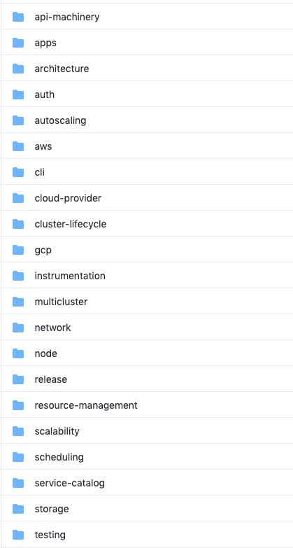

系列目录
1. 介绍
个人觉得，k8s包含着许多运维理念，理解了k8s的功能设计，就基本理解了运维。并且，一个优秀的系统是值得深入了解和学习的，这样对自身的系统架构也有很大帮助。本系列将通过阅读k8s的设计文档来加深对k8s的理解，并输出自己的一些看法。
软件服务于业务。随着业务规模的扩大，软件的中断的时间越长，对业务的影响面越大。所以，稳定大于一切。
永远不变的就是变化，变更的速度在互联网时代决定着业务存活的时长。因此，效率很重要。
在软件的世界，计算资源就是金钱，浪费一毫秒的计算资源就是在浪费金钱。我们能说，钱不重要吗？ 不能，这样子的话，成本就很关键了。
CDN、负载均衡、微服务、云计算、敏捷开发、DevOps、容器、k8s，层出不穷的概念和实践，其实最终都在解决上面说的稳定、效率、成本问题。
2. 总览

- architecture，架构相关
- apps，应用相关
- auth，认证相关
- autoscaling，扩缩容相关
- network，网络相关
- scheduling，调度相关
- storage，存储相关
本系列将对以上内容相关内容进行细讲。